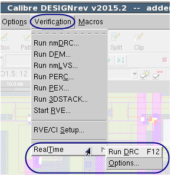

You have met requirements described in “Requirements for Calibre RealTime with Calibre DESIGNrev”.
Make sure that the environment variable MGC_REALTIME_DISABLE is not set to 1 in your shell environment.
$CALIBRE_HOME/bin/calibredrv -m layout.database <options>
where layout.database is the layout file in a supported design format.
A view of Calibre DESIGNrev with the Calibre RealTime Integrated Toolbar is shown in the following figure.
Calibre RealTime also adds items to the Verification menu in Calibre DESIGNrev, as shown at right.
The Calibre RealTime server is started when the toolbar is loaded or the Calibre RealTime Options dialog box is opened.

Calibre® RealTime Custom User’s Manual, v2021.2Unpublished work. © 2021 Siemens Browser Requirements